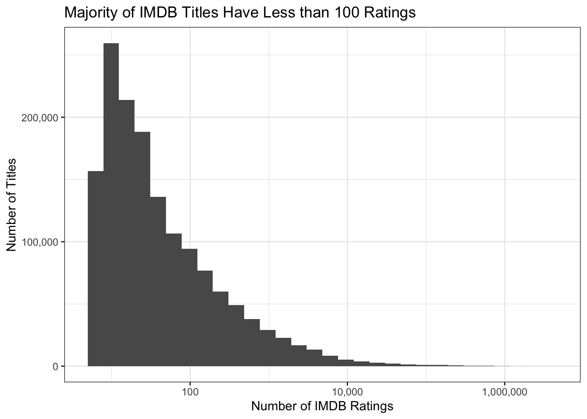

get_imdb_file <- function(fname){
BASE_URL <- "https://datasets.imdbws.com/"
fname_ext <- paste0(fname, ".tsv.gz")
if(!file.exists(fname_ext)){
FILE_URL <- paste0(BASE_URL, fname_ext)
download.file(FILE_URL,
destfile = fname_ext)
}
as.data.frame(readr::read_tsv(fname_ext, lazy=FALSE))
}This Is My Mini Project #2
# My code here
NAME_BASICS <- get_imdb_file("name.basics")Rows: 3283736 Columns: 6
── Column specification ────────────────────────────────────────────────────────
Delimiter: "\t"
chr (6): nconst, primaryName, birthYear, deathYear, primaryProfession, known...
ℹ Use `spec()` to retrieve the full column specification for this data.
ℹ Specify the column types or set `show_col_types = FALSE` to quiet this message.TITLE_BASICS <- get_imdb_file("title.basics")Warning: One or more parsing issues, call `problems()` on your data frame for details,
e.g.:
dat <- vroom(...)
problems(dat)Rows: 2620687 Columns: 9
── Column specification ────────────────────────────────────────────────────────
Delimiter: "\t"
chr (8): tconst, titleType, primaryTitle, originalTitle, startYear, endYear,...
dbl (1): isAdult
ℹ Use `spec()` to retrieve the full column specification for this data.
ℹ Specify the column types or set `show_col_types = FALSE` to quiet this message.TITLE_EPISODES <- get_imdb_file("title.episode")Rows: 8574551 Columns: 4
── Column specification ────────────────────────────────────────────────────────
Delimiter: "\t"
chr (4): tconst, parentTconst, seasonNumber, episodeNumber
ℹ Use `spec()` to retrieve the full column specification for this data.
ℹ Specify the column types or set `show_col_types = FALSE` to quiet this message.TITLE_RATINGS <- get_imdb_file("title.ratings")Rows: 1488213 Columns: 3
── Column specification ────────────────────────────────────────────────────────
Delimiter: "\t"
chr (1): tconst
dbl (2): averageRating, numVotes
ℹ Use `spec()` to retrieve the full column specification for this data.
ℹ Specify the column types or set `show_col_types = FALSE` to quiet this message.TITLE_CREW <- get_imdb_file("title.crew")Rows: 8767763 Columns: 3
── Column specification ────────────────────────────────────────────────────────
Delimiter: "\t"
chr (3): tconst, directors, writers
ℹ Use `spec()` to retrieve the full column specification for this data.
ℹ Specify the column types or set `show_col_types = FALSE` to quiet this message.TITLE_PRINCIPALS <- get_imdb_file("title.principals")Rows: 11028794 Columns: 6
── Column specification ────────────────────────────────────────────────────────
Delimiter: "\t"
chr (5): tconst, nconst, category, job, characters
dbl (1): ordering
ℹ Use `spec()` to retrieve the full column specification for this data.
ℹ Specify the column types or set `show_col_types = FALSE` to quiet this message.options(repos = c(CRAN = "https://cloud.r-project.org"))
install.packages("dplyr")
The downloaded binary packages are in
/var/folders/55/x9_x3zvj66q6mf2n12kmq6mm0000gn/T//RtmpNEvFYD/downloaded_packagesinstall.packages("stringr")
The downloaded binary packages are in
/var/folders/55/x9_x3zvj66q6mf2n12kmq6mm0000gn/T//RtmpNEvFYD/downloaded_packageslibrary(dplyr)
Attaching package: 'dplyr'The following objects are masked from 'package:stats':
filter, lagThe following objects are masked from 'package:base':
intersect, setdiff, setequal, unionlibrary(stringr)
NAME_BASICS <- NAME_BASICS |>
filter(str_count(knownForTitles, ",") > 1)install.packages("ggplot2")
The downloaded binary packages are in
/var/folders/55/x9_x3zvj66q6mf2n12kmq6mm0000gn/T//RtmpNEvFYD/downloaded_packageslibrary(ggplot2)TITLE_RATINGS |>
ggplot(aes(x=numVotes)) +
geom_histogram(bins=30) +
xlab("Number of IMDB Ratings") +
ylab("Number of Titles") +
ggtitle("Majority of IMDB Titles Have Less than 100 Ratings") +
theme_bw() +
scale_x_log10(labels=scales::comma) +
scale_y_continuous(labels=scales::comma)
TITLE_RATINGS |>
pull(numVotes) |>
quantile() 0% 25% 50% 75% 100%
5 11 26 101 2952034 TITLE_RATINGS <- TITLE_RATINGS |>
filter(numVotes >= 100)TITLE_BASICS <- TITLE_BASICS |>
semi_join(TITLE_RATINGS,
join_by(tconst == tconst))
TITLE_CREW <- TITLE_CREW |>
semi_join(TITLE_RATINGS,
join_by(tconst == tconst))
TITLE_EPISODES_1 <- TITLE_EPISODES |>
semi_join(TITLE_RATINGS,
join_by(tconst == tconst))
TITLE_EPISODES_2 <- TITLE_EPISODES |>
semi_join(TITLE_RATINGS,
join_by(parentTconst == tconst))
TITLE_EPISODES <- bind_rows(TITLE_EPISODES_1,
TITLE_EPISODES_2) |>
distinct()
TITLE_PRINCIPALS <- TITLE_PRINCIPALS |>
semi_join(TITLE_RATINGS, join_by(tconst == tconst))
rm(TITLE_EPISODES_1)
rm(TITLE_EPISODES_2)NAME_BASICS <- NAME_BASICS |>
mutate(birthYear = as.numeric(birthYear),
deathYear = as.numeric(deathYear))Warning: There were 2 warnings in `mutate()`.
The first warning was:
ℹ In argument: `birthYear = as.numeric(birthYear)`.
Caused by warning:
! NAs introduced by coercion
ℹ Run `dplyr::last_dplyr_warnings()` to see the 1 remaining warning.#Task 1
str(TITLE_BASICS)'data.frame': 188931 obs. of 9 variables:
$ tconst : chr "tt0000001" "tt0000002" "tt0000003" "tt0000004" ...
$ titleType : chr "short" "short" "short" "short" ...
$ primaryTitle : chr "Carmencita" "Le clown et ses chiens" "Poor Pierrot" "Un bon bock" ...
$ originalTitle : chr "Carmencita" "Le clown et ses chiens" "Pauvre Pierrot" "Un bon bock" ...
$ isAdult : num 0 0 0 0 0 0 0 0 0 0 ...
$ startYear : chr "1894" "1892" "1892" "1892" ...
$ endYear : chr "\\N" "\\N" "\\N" "\\N" ...
$ runtimeMinutes: chr "1" "5" "5" "12" ...
$ genres : chr "Documentary,Short" "Animation,Short" "Animation,Comedy,Romance" "Animation,Short" ...str(TITLE_CREW)'data.frame': 330408 obs. of 3 variables:
$ tconst : chr "tt0000001" "tt0000002" "tt0000003" "tt0000004" ...
$ directors: chr "nm0005690" "nm0721526" "nm0721526" "nm0721526" ...
$ writers : chr "\\N" "\\N" "\\N" "\\N" ...str(TITLE_EPISODES)'data.frame': 3022865 obs. of 4 variables:
$ tconst : chr "tt0045960" "tt0046855" "tt0048378" "tt0048562" ...
$ parentTconst : chr "tt0044284" "tt0046643" "tt0047702" "tt0047768" ...
$ seasonNumber : chr "2" "1" "1" "1" ...
$ episodeNumber: chr "3" "4" "6" "10" ...str(TITLE_RATINGS)'data.frame': 374145 obs. of 3 variables:
$ tconst : chr "tt0000001" "tt0000002" "tt0000003" "tt0000004" ...
$ averageRating: num 5.7 5.6 6.5 5.4 6.2 5 5.4 5.4 5.4 6.8 ...
$ numVotes : num 2096 283 2103 183 2839 ...str(TITLE_PRINCIPALS)'data.frame': 2677548 obs. of 6 variables:
$ tconst : chr "tt0000001" "tt0000001" "tt0000001" "tt0000001" ...
$ ordering : num 1 2 3 4 1 2 1 2 3 4 ...
$ nconst : chr "nm1588970" "nm0005690" "nm0005690" "nm0374658" ...
$ category : chr "self" "director" "producer" "cinematographer" ...
$ job : chr "\\N" "\\N" "producer" "director of photography" ...
$ characters: chr "[\"Self\"]" "\\N" "\\N" "\\N" ...library(dplyr)
# Correct TITLE_BASICS
TITLE_BASICS <- TITLE_BASICS |>
mutate(
startYear = as.numeric(startYear),
endYear = as.numeric(endYear),
isAdult = as.logical(as.numeric(isAdult))
)Warning: There were 2 warnings in `mutate()`.
The first warning was:
ℹ In argument: `startYear = as.numeric(startYear)`.
Caused by warning:
! NAs introduced by coercion
ℹ Run `dplyr::last_dplyr_warnings()` to see the 1 remaining warning.# Correct TITLE_RATINGS
TITLE_RATINGS <- TITLE_RATINGS |>
mutate(
averageRating = as.numeric(averageRating),
numVotes = as.numeric(numVotes)
)
# Correct TITLE_CREW
TITLE_CREW <- TITLE_CREW |>
mutate(
# Add conversions if needed
)
# Correct TITLE_EPISODES
TITLE_EPISODES <- TITLE_EPISODES |>
mutate(
seasonNumber = as.numeric(seasonNumber),
episodeNumber = as.numeric(episodeNumber)
)Warning: There were 2 warnings in `mutate()`.
The first warning was:
ℹ In argument: `seasonNumber = as.numeric(seasonNumber)`.
Caused by warning:
! NAs introduced by coercion
ℹ Run `dplyr::last_dplyr_warnings()` to see the 1 remaining warning.# Correct TITLE_PRINCIPALS
TITLE_PRINCIPALS <- TITLE_PRINCIPALS |>
mutate(
ordering = as.numeric(ordering)
)glimpse(NAME_BASICS)Rows: 969,837
Columns: 6
$ nconst <chr> "nm0000001", "nm0000002", "nm0000003", "nm0000004", …
$ primaryName <chr> "Fred Astaire", "Lauren Bacall", "Brigitte Bardot", …
$ birthYear <dbl> 1899, 1924, 1934, 1949, 1918, 1915, 1899, 1924, 1925…
$ deathYear <dbl> 1987, 2014, NA, 1982, 2007, 1982, 1957, 2004, 1984, …
$ primaryProfession <chr> "actor,miscellaneous,producer", "actress,soundtrack,…
$ knownForTitles <chr> "tt0072308,tt0050419,tt0053137,tt0027125", "tt003738…#Task 2
#1.How many movies are in our dataset? How many TV series? How many TV episodes?
# Disable scientific notation
options(scipen = 999)
# Count movies, TV series, and TV episodes
title_counts <- TITLE_BASICS |>
group_by(titleType) |>
summarize(count = n()) |>
filter(titleType %in% c("movie", "tvSeries", "tvEpisode"))
title_counts# A tibble: 3 × 2
titleType count
<chr> <int>
1 movie 76565
2 tvEpisode 66408
3 tvSeries 12475#Task 2
#2. Who is the oldest living person in our dataset?
# Find the oldest living person
oldest_living <- NAME_BASICS |>
filter(is.na(deathYear)) |>
arrange(birthYear) |>
slice(1)
oldest_living nconst primaryName birthYear deathYear primaryProfession
1 nm1227803 C. Hostrup 1818 NA writer,composer,actor
knownForTitles
1 tt0031361,tt0134089,tt0844680,tt14463014#Task 2
#3. There is one TV Episode in this dataset with a perfect 10/10 rating and at least 200,000 IMDb ratings. What is it? What series does it belong to?
# Step 1: Get ratings for episodes with at least 200,000 votes
popular_episodes <- TITLE_RATINGS |>
filter(numVotes >= 200000, averageRating == 10) |>
inner_join(TITLE_BASICS, by = "tconst") |>
filter(titleType == "tvEpisode")
# Step 2: Check for results
if (nrow(popular_episodes) == 0) {
# If no perfect 10/10 episode, find the highest rated episode instead
highest_rated_episode <- TITLE_RATINGS |>
filter(numVotes >= 200000) |>
inner_join(TITLE_BASICS, by = "tconst") |>
arrange(desc(averageRating)) |>
slice(1)
# Display the highest rated episode if no perfect 10/10 found
highest_rated_episode
} else {
# Display the perfect 10/10 episode(s)
popular_episodes
} tconst averageRating numVotes titleType primaryTitle originalTitle isAdult
1 tt0903747 9.5 2219201 tvSeries Breaking Bad Breaking Bad FALSE
startYear endYear runtimeMinutes genres
1 2008 2013 45 Crime,Drama,Thriller#Task 2
#4.What four projects is the actor Mark Hamill most known for?
# Find the titles Mark Hamill is most known for
mark_hamill <- NAME_BASICS |>
filter(primaryName == "Mark Hamill") |>
select(nconst)
known_projects <- TITLE_PRINCIPALS |>
filter(nconst %in% mark_hamill$nconst) |>
group_by(tconst) |>
summarize(count = n()) |>
top_n(4, count) |>
inner_join(TITLE_BASICS, by = "tconst")
known_projects# A tibble: 15 × 10
tconst count titleType primaryTitle originalTitle isAdult startYear endYear
<chr> <int> <chr> <chr> <chr> <lgl> <dbl> <dbl>
1 tt01033… 3 tvSeries Batman: The… Batman: The … FALSE 1992 1995
2 tt01261… 3 tvSeries Swat Kats: … SWAT Kats: T… FALSE 1993 1995
3 tt01895… 3 videoGame Full Thrott… Full Throttle FALSE 1995 NA
4 tt02751… 3 tvSeries Justice Lea… Justice Leag… FALSE 2001 2004
5 tt02814… 3 tvSeries The New Woo… The Woody Wo… FALSE 1999 2002
6 tt02916… 3 tvSeries Time Squad Time Squad FALSE 2001 2003
7 tt03186… 3 videoGame The Scorpio… The Scorpion… FALSE 2002 NA
8 tt03614… 4 video Comic Book:… Comic Book: … FALSE 2004 NA
9 tt04237… 3 tvSeries Super Robot… Super Robot … FALSE 2004 2006
10 tt05438… 3 tvEpisode Operation: … Operation: P… FALSE 2002 NA
11 tt05776… 3 tvEpisode The Sentry … The Sentry S… FALSE 1996 NA
12 tt06167… 3 tvEpisode Beach Blank… Beach Blanke… FALSE 1997 NA
13 tt06877… 3 tvEpisode Joint Point Joint Point FALSE 2005 NA
14 tt06877… 3 tvEpisode Plastic Buf… Plastic Buff… FALSE 2005 NA
15 tt08391… 3 tvSeries Metalocalyp… Metalocalypse FALSE 2006 2013
# ℹ 2 more variables: runtimeMinutes <chr>, genres <chr>#Task 2
#5 What TV series, with more than 12 episodes, has the highest average rating?
# Step 1: Count episodes per TV series
episode_counts <- TITLE_EPISODES |>
group_by(parentTconst) |>
summarise(total_episodes = n(), .groups = 'drop')
# Step 2: Join with TITLE_RATINGS to get ratings
tv_series_ratings <- TITLE_BASICS |>
filter(titleType == "tvSeries") |>
inner_join(TITLE_RATINGS, by = "tconst") |>
inner_join(episode_counts, by = c("tconst" = "parentTconst"))
# Step 3: Filter for series with more than 12 episodes
high_rating_series <- tv_series_ratings |>
filter(total_episodes > 12) |>
arrange(desc(averageRating)) |>
slice(1)
# Step 4: Display the result
high_rating_series |>
select(primaryTitle, total_episodes, averageRating) primaryTitle total_episodes averageRating
1 Marmadesam 238 9.6#Task 2
#6. Is it true that episodes from later seasons of Happy Days have lower average ratings than early seasons?
# Step 1: Get the tconst for Happy Days
happy_days_tconst <- TITLE_BASICS |>
filter(primaryTitle == "Happy Days") |>
select(tconst)
# Step 2: Get episodes of Happy Days and their ratings
happy_days_episodes <- TITLE_EPISODES |>
filter(parentTconst %in% happy_days_tconst$tconst) |>
inner_join(TITLE_RATINGS, by = "tconst")
# Step 3: Calculate average ratings by season
happy_days_season_ratings <- happy_days_episodes |>
group_by(seasonNumber) |>
summarize(average_rating = mean(averageRating, na.rm = TRUE), .groups = 'drop')
# Step 4: Check the ratings for each season
happy_days_season_ratings# A tibble: 11 × 2
seasonNumber average_rating
<dbl> <dbl>
1 1 7.58
2 2 7.69
3 3 7.7
4 4 7.43
5 5 7
6 6 7.02
7 7 6.33
8 8 5.3
9 9 6.4
10 10 6.7
11 11 7.33# Step 5: Determine if later seasons have lower ratings than earlier ones
lower_average <- all(happy_days_season_ratings$average_rating[1:(nrow(happy_days_season_ratings) - 1)] >
happy_days_season_ratings$average_rating[2:nrow(happy_days_season_ratings)])
# Step 6: Print the result
if (lower_average) {
print("Yes, later seasons of Happy Days have lower average ratings than earlier seasons.")
} else {
print("No, later seasons of Happy Days do not have lower average ratings than earlier seasons.")
}[1] "No, later seasons of Happy Days do not have lower average ratings than earlier seasons."#Task 3
print("success_metric=averageRating×log(numVotes) ")[1] "success_metric=averageRating×log(numVotes) "